In this writing, I want to share how I added a second rule to my team's pull request check, that every fact table name starts with fact_, and how a rename that broke nothing showed me that TMDL never says which tables are fact tables.
In September I turned the first sentence on my team's list into a script, and I ended that post with four questions to ask before writing the next rule. This is the next rule. I expected it to be the easy one: read every table line in the model and report any name without the prefix. That search is one line. The hard part was the word fact. Before a check can complain about a fact table, it has to know which tables are fact tables, and nothing in the model files says so.
1. The Second Sentence on My Team's List
The new sentence is a naming convention: every fact table in every semantic model starts with fact_, and dimension tables keep plain names. Conventions like this are different in every team. Some teams put fact_ at the front of the name, like fact_sales, and other teams put _fact at the end, like sales_fact. Which one a team picks matters less than every model following it. The reason is the people who never open the model view. A reviewer reading a pull request, or a teammate searching the repository, should be able to tell a fact table from a dimension table by its name alone.
My test model is directlake_import_composite, the composite model in the same Contoso project I keep coming back to. Its fact table reads a lakehouse table called sales.
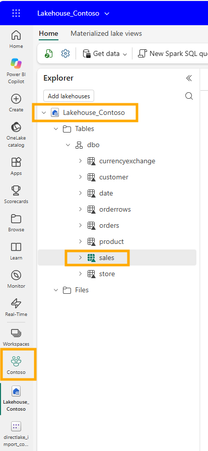
In the semantic model I renamed it to fact_sales. The properties card in the web modeling view shows both names together: Name is fact_sales, Source name is still sales, and the storage mode is Direct Lake.
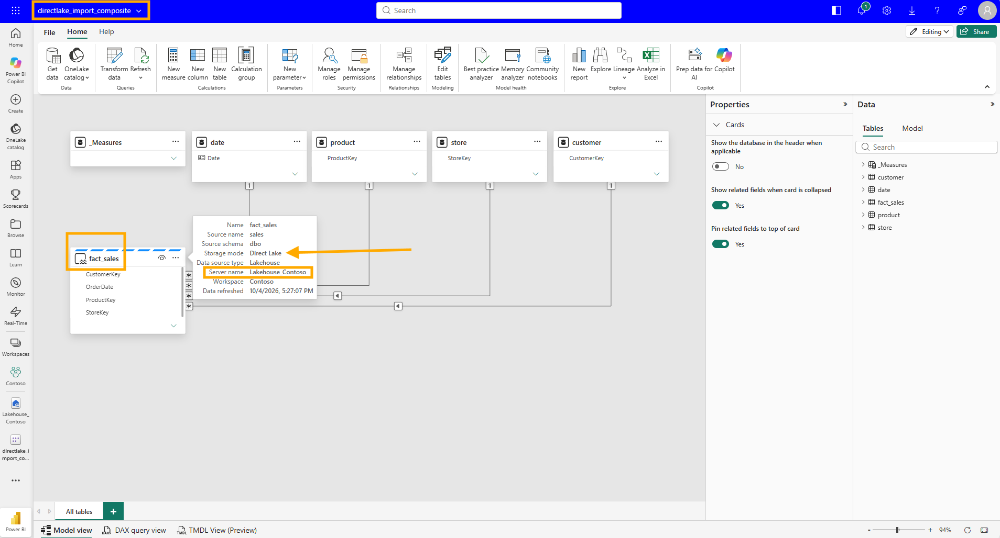
VS Code agrees. The file is now fact_sales.tmdl, its first line is table fact_sales, and line 3 keeps the source name as sourceLineageTag: [dbo].[sales].
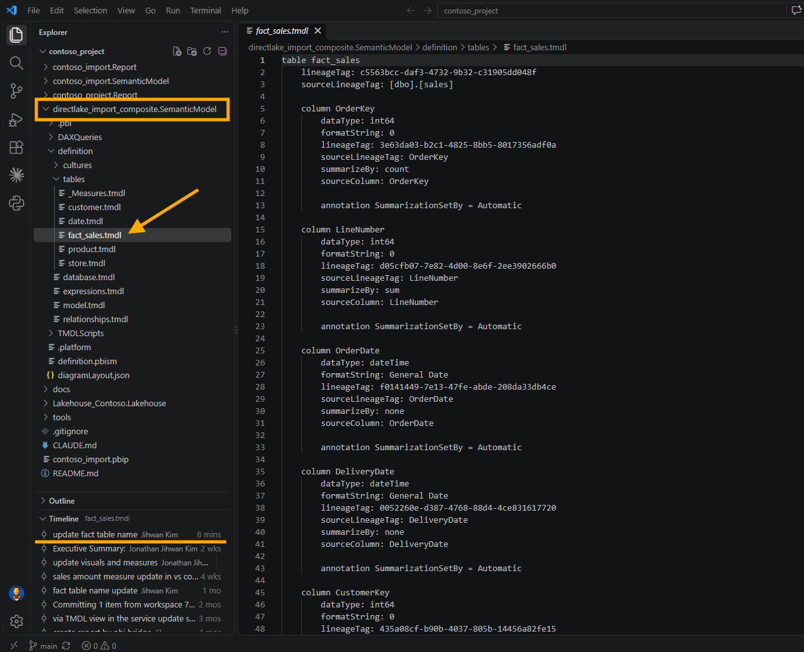
2. Six Files for One Rename
I made that rename in the Power BI service and committed it from the workspace. It changed six files. The two culture files from my translation post, ko-KR.tmdl and nl-NL.tmdl, changed one line each, so the Korean and Dutch captions stayed on the table. model.tmdl changed its ref table line. relationships.tmdl changed four fromColumn lines. _Measures.tmdl rewrote five measures. And sales.tmdl became fact_sales.tmdl, with two lines changed inside it.
Every change was the same substitution. In relationships.tmdl, all four fromColumn lines changed, and every toColumn line stayed as it was.
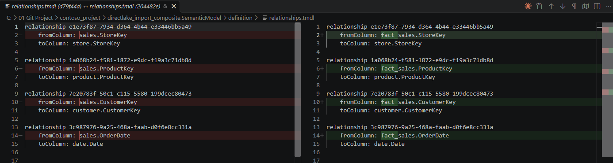
In _Measures.tmdl, every measure that reads the table directly had each 'sales' replaced with 'fact_sales'. The screenshot shows the first two, Sales Amount and Total Cost. Gross Margin below them did not change, because it only uses other measures.
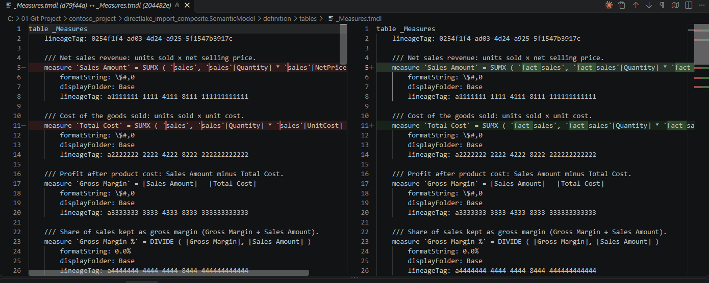
What did not change was just as interesting. The table kept its lineageTag, and line 3 still reads sourceLineageTag: [dbo].[sales].
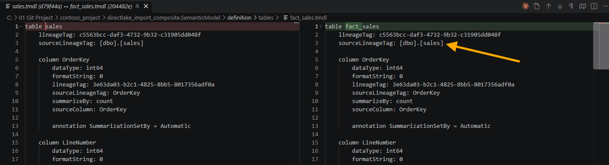
Further down, the partition was renamed, but its source still reads entityName: sales. Whatever the table is called, the model remembers its source name in two places.
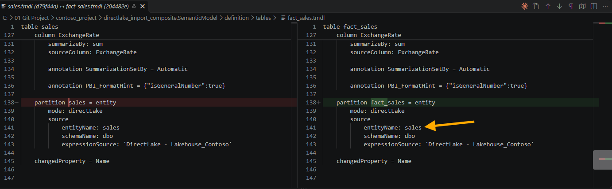
3. An Accident: fact_sales Became sales Again
A few commits later, the accident happened. The table was called sales again, the same name it has in the lakehouse, and this change also arrived as a commit from the workspace. On a real team there are many ways for this to happen: a teammate who prefers source names, a table removed and added back, a merge resolved the wrong way. The cause matters less than what happened next, which was nothing.
4. Nothing Turned Red
The report did not break. contoso_project.Report has 13 visuals on two pages. Their fields come from _Measures, date, product and store, and not a single visual.json names the fact table, so the visuals did not care what it was called. Nothing broke, so nothing warned me.
The measures changed without anybody editing them. Five measures in _Measures.tmdl were rewritten, ten changed lines in a pull request. Each of them looks like tidying, and a reviewer who approves tidying is doing nothing wrong.
And the convention lost a table. If my team finds its fact tables by searching the repository for table fact_, this model's only fact table has dropped out of that search. In a repository with one model that is a small thing. In a repository with many models, it is how a team stops trusting its own naming.
5. No Property Says Fact, the Relationships Do
To write the check, I first had to answer the first of my four questions from September: which objects does the rule apply to. Fact tables, of course. But a TMDL table file holds a name, columns, measures and partitions, and no line that marks the table as a fact table or a dimension table.
Microsoft says there is nothing to find. In the Star schema relevance to Power BI semantic models section of the Understand star schema and the importance for Power BI article, there is no table property that modelers set to make a table a dimension or a fact. The type is determined by the model relationships, and the same paragraph ends with the sentence this whole check is built on: the "one" side is always a dimension table while the "many" side is always a fact table.
So the rule does not start from the table names. It starts from relationships.tmdl, and that is where the first trap from September came back.
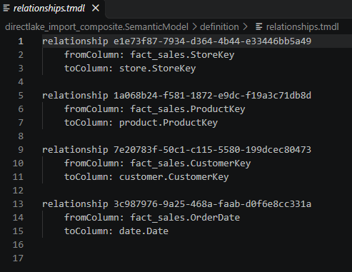
There is no cardinality anywhere in that file. All four relationships are written the same way, a fromColumn and a toColumn and nothing else. Yet each of them connects many rows in fact_sales to one row in a dimension table, such as one store or one product. Cardinality is exactly that information, one or many on each side, and when it has the default value, the file does not write it down. It is the same trap as isHiddenInViewMode in September, which was not written down for a visible filter card either.
I wanted to find that default written in Microsoft's documentation, and I could not. The SingleColumnRelationship.FromCardinality reference is the page for the property that would hold it, and it only says that the "From" end of a relationship can be One or Many. It does not say what a missing line means. So I made the check follow what my own model does: no fromCardinality line means the from side is many, and no toCardinality line means the to side is one. That is an assumption from my own files, not a rule I found in the documentation, so it is the first thing I would check if the script ever gives an answer that looks wrong.
6. Three Cases the Rule Has to Tell Apart
With that definition, every table in my two models falls into one of three cases.
The first is the one I wrote the rule for. sales sits on the many side of four relationships, to customer, date, product and store, and on the one side of none. It is a fact table, and without the prefix it is a violation.
The second is every table that takes part in no one-to-many relationship at all. In directlake_import_composite that is _Measures, and in contoso_import it is a calculated table called 'Monthly Sales Summary'. By the documentation's definition they are neither fact nor dimension, so the check skips them. That answers my second question from September the way I hoped: the exemption comes from the definition, not from a list of names that somebody has to keep up to date. A field parameter or a calculation group lands in the same place, as long as it has no relationships.
The third case surprised me. contoso_import also has 'Margin Tier by customer', a calculated table that summarizes sales with SUMMARIZECOLUMNS, and it has one relationship, from its OrderDate to date. That puts it on the many side, so by the same sentence it is a fact table. Nobody would call it a fact table by looking at it. The documentation has no category for helper tables, though, and its Factless fact tables section goes even further: a bridging table that only relates two dimensions is designed as a factless fact table. I decided to let the rule follow the documentation rather than my own habits, so this table gets flagged too.
Two more details close the gaps. One-to-one and many-to-many relationships do not decide the type of either end, because the documentation's sentence is about one-to-many. And a table on the many side of one relationship and the one side of another, like the middle table of a snowflake dimension, is left alone, because the same section asks modelers not to mix the two types in a single table.
Here are the four questions from September again, answered for this rule in plain words:
- Which tables does the rule check? Only fact tables. A table counts as a fact table when it is on the "many" side of a relationship and never on the "one" side.
- Which tables does it skip, and why? Tables that are not in any one-to-many relationship, like the measure table. The same Microsoft paragraph explains why they are neither fact nor dimension, so the script does not need a list of table names to ignore.
- What does the file show when the rule is followed, and when it is broken? The table name. It appears in the
tableline, in theref tableline ofmodel.tmdl, and everywhere else the table is used. The cardinality is different: when it is the default, the file does not show it at all. - Can the answer change after the file is saved? Yes. Anyone can rename the table later, in Desktop or in the service, and the rename arrives as a new commit, the same way mine did.
7. The Script, and What It Found
Like the first rule, I am sharing the whole script rather than walking through it line by line. It is PowerShell, it only reads files and never changes the model, and it sits in the same tools folder as the first one.
In short, it takes one or more .SemanticModel folders, by default every one in the repository. For each model it reads the table names from definition\tables and the relationships from definition\relationships.tmdl, treating a missing cardinality as many on the from side and one on the to side. A table on the many side of at least one one-to-many relationship, and never on the one side, is a fact table, and every fact table whose name does not start with fact_, or end with the suffix when one is given, is reported with the relationships that made it a fact table and the source of its rows. It exits with 0 for a clean run, 1 for violations, and 2 when no model could be checked, the same contract as the filter rule.
Two honest notes before you copy it. The default cardinality comes from my own files and my own model view, as section 5 explained, not from documentation. And the name is compared case-sensitively, so Fact_sales fails. If your team uses a different prefix, change -Prefix. If your team puts the marker at the end of the name instead, run it with -Suffix '_fact', or change the default at the top of the script so the hook uses it too.
<#
.SYNOPSIS
Checks that every fact table in a semantic model has a name that starts
with fact_, finding the fact tables from the model relationships rather
than from the table names.
.DESCRIPTION
Team rule: every fact table name starts with fact_. A team that marks
fact tables at the end of the name instead, such as sales_fact, passes
-Suffix and the same check runs against the end of the name.
Checking that rule is not the same as searching for table lines that start
with fact_. Three things make it harder.
First, nothing in TMDL says which tables are fact tables. There is no table
property for it. The star schema guidance on Microsoft Learn says the table
type is determined by the model relationships, and that the "one" side is
always a dimension table while the "many" side is always a fact table. So
the check reads relationships.tmdl before it reads any table name.
Second, relationships.tmdl leaves the cardinality out when it is the
default. A relationship with no fromCardinality and no toCardinality line
is many on the fromColumn side and one on the toColumn side, which is what
the model view draws as * and 1. A missing line is the normal case, not an
unknown one.
Third, a table that takes part in no one-to-many relationship is neither a
fact table nor a dimension table by that definition, so it is skipped and
not reported. That covers the measure table, disconnected calculated
tables and field parameters, and it is decided by the relationships, not
by a list of names. One-to-one and many-to-many relationships do not decide
the type of either end.
Read only. This script never modifies the model.
.PARAMETER ModelPath
One or more .SemanticModel folders. Defaults to every .SemanticModel folder
in the repository root, which is the folder above tools.
.PARAMETER Prefix
The prefix every fact table name must start with. Compared
case-sensitively, so Fact_sales does not pass.
.PARAMETER Suffix
For a team that puts the marker at the end of the name, such as _fact.
When a suffix is given, the name is checked for the suffix and the prefix
is not used. Also compared case-sensitively.
.EXAMPLE
.\tools\Test-FactTablePrefix.ps1
.EXAMPLE
.\tools\Test-FactTablePrefix.ps1 -ModelPath '.\directlake_import_composite.SemanticModel'
.EXAMPLE
.\tools\Test-FactTablePrefix.ps1 -Suffix '_fact'
#>
[CmdletBinding()]
param(
[string[]]$ModelPath,
[string]$Prefix = 'fact_',
[string]$Suffix
)
# The convention this run checks, in the words the output uses.
$ruleText = 'start with {0}' -f $Prefix
if ($Suffix) { $ruleText = 'end with {0}' -f $Suffix }
$ErrorActionPreference = 'Stop'
if (-not $ModelPath -or $ModelPath.Count -eq 0) {
$repoRoot = Split-Path -Parent $PSScriptRoot
$ModelPath = @(Get-ChildItem -Path $repoRoot -Directory -Filter '*.SemanticModel' |
Sort-Object Name | ForEach-Object { $_.FullName })
}
function Get-TableFromColumnRef {
<#
A column reference in relationships.tmdl is table.column. A table name
with a space or another special character is wrapped in single quotes,
and a quote inside the name is written twice, as in
'Margin Tier by customer'.OrderDate.
#>
param([string]$Reference)
$Reference = $Reference.Trim()
if ($Reference.StartsWith("'")) {
$m = [regex]::Match($Reference, "^'((?:[^']|'')+)'\.")
if (-not $m.Success) { return $null }
return ($m.Groups[1].Value -replace "''", "'")
}
$dot = $Reference.IndexOf('.')
if ($dot -lt 1) { return $null }
return $Reference.Substring(0, $dot)
}
function Format-TableName {
# Quote a name the way TMDL does, so the output can be searched for as is.
param([string]$Name)
if ($Name -match '^[A-Za-z_][A-Za-z0-9_]*$') { return $Name }
return ("'{0}'" -f ($Name -replace "'", "''"))
}
function Get-PartitionSource {
<#
Where the rows of a table come from, so a violation says more than a
name. An entity partition, which is what Direct Lake uses, names its
source table, and that is the name the table had before anybody
renamed it.
#>
param([string]$Text)
$kind = [regex]::Match($Text, '(?m)^\s*partition\s+.+?=\s*(\w+)\s*$')
if (-not $kind.Success) { return 'no partition found' }
switch ($kind.Groups[1].Value) {
'entity' {
$entity = [regex]::Match($Text, '(?m)^\s*entityName:\s*(.+?)\s*$').Groups[1].Value
$schema = [regex]::Match($Text, '(?m)^\s*schemaName:\s*(.+?)\s*$').Groups[1].Value
if ($schema) { return ('entity partition, source table {0}.{1}' -f $schema, $entity) }
return ('entity partition, source table {0}' -f $entity)
}
'calculated' { return 'calculated table' }
'm' { return 'Power Query (M) partition' }
default { return ('{0} partition' -f $kind.Groups[1].Value) }
}
}
$violations = @()
$summaries = @()
$classifiedCount = 0
foreach ($path in $ModelPath) {
if (-not (Test-Path -LiteralPath $path)) {
Write-Warning "ModelPath does not exist: $path"
continue
}
$path = (Resolve-Path -LiteralPath $path).Path
$modelName = Split-Path -Leaf $path
# -----------------------------------------------------------------------
# 1. Read the table names, and keep each file for its partition source.
# -----------------------------------------------------------------------
$tablesRoot = Join-Path $path 'definition\tables'
if (-not (Test-Path -LiteralPath $tablesRoot)) {
Write-Warning "No definition\tables folder under $path. Is the model saved as TMDL?"
continue
}
$tables = @{}
foreach ($tmdl in @(Get-ChildItem -Path $tablesRoot -Filter '*.tmdl' -File)) {
$text = Get-Content -LiteralPath $tmdl.FullName -Raw -Encoding UTF8
$nameMatch = [regex]::Match($text, "(?m)^table\s+'?([^'\r\n]+?)'?\s*$")
if ($nameMatch.Success) { $tables[$nameMatch.Groups[1].Value] = $text }
}
# -----------------------------------------------------------------------
# 2. Read the relationships.
#
# Each block starts with "relationship <name>" and holds a fromColumn and
# a toColumn. fromCardinality and toCardinality are written only when they
# differ from the default, so each relationship starts as many on the from
# side and one on the to side until a line says otherwise.
# -----------------------------------------------------------------------
$relationships = @()
$relationshipsPath = Join-Path $path 'definition\relationships.tmdl'
if (Test-Path -LiteralPath $relationshipsPath) {
$current = $null
foreach ($line in (Get-Content -LiteralPath $relationshipsPath -Encoding UTF8)) {
if ($line -match '^relationship\s+(.+?)\s*$') {
$current = [pscustomobject]@{
Name = $Matches[1]
From = $null
To = $null
FromCardinality = 'many'
ToCardinality = 'one'
}
$relationships += $current
continue
}
if ($null -eq $current) { continue }
if ($line -match '^\s+fromColumn:\s*(.+?)\s*$') {
$current.From = Get-TableFromColumnRef $Matches[1]
}
elseif ($line -match '^\s+toColumn:\s*(.+?)\s*$') {
$current.To = Get-TableFromColumnRef $Matches[1]
}
elseif ($line -match '^\s+fromCardinality:\s*(\w+)') {
$current.FromCardinality = $Matches[1].ToLower()
}
elseif ($line -match '^\s+toCardinality:\s*(\w+)') {
$current.ToCardinality = $Matches[1].ToLower()
}
}
}
# -----------------------------------------------------------------------
# 3. Decide which tables are fact tables.
#
# Only a one-to-many relationship decides a type: the "one" end is a
# dimension table and the "many" end is a fact table. A table that is the
# many end of one relationship and the one end of another, like the
# middle table of a snowflake dimension, is not called a fact table here.
# -----------------------------------------------------------------------
$manyEnds = @{}
$oneEnds = @{}
$deciding = 0
foreach ($r in $relationships) {
if (-not $r.From -or -not $r.To) { continue }
if ($r.FromCardinality -eq 'many' -and $r.ToCardinality -eq 'one') {
$many = $r.From
$one = $r.To
}
elseif ($r.FromCardinality -eq 'one' -and $r.ToCardinality -eq 'many') {
$many = $r.To
$one = $r.From
}
else {
continue
}
$deciding++
if (-not $manyEnds.ContainsKey($many)) { $manyEnds[$many] = @() }
$manyEnds[$many] += $one
$oneEnds[$one] = $true
}
# A model with no one-to-many relationship has no fact table by this
# definition, so it cannot pass the rule, it can only go unchecked.
if ($deciding -eq 0) {
Write-Warning "$modelName has no one-to-many relationship, so no table in it can be called a fact table. Nothing was checked."
continue
}
$classifiedCount++
$factTables = @($manyEnds.Keys | Where-Object { -not $oneEnds.ContainsKey($_) } | Sort-Object)
$dimensionTables = @($oneEnds.Keys | Where-Object { -not $manyEnds.ContainsKey($_) })
$unrelated = @($tables.Keys |
Where-Object { -not $manyEnds.ContainsKey($_) -and -not $oneEnds.ContainsKey($_) } |
Sort-Object)
# -----------------------------------------------------------------------
# 4. Check the name of every fact table.
# -----------------------------------------------------------------------
foreach ($fact in $factTables) {
if ($Suffix) {
if ($fact.EndsWith($Suffix, [System.StringComparison]::Ordinal)) { continue }
}
elseif ($fact.StartsWith($Prefix, [System.StringComparison]::Ordinal)) {
continue
}
$source = 'table file not found'
if ($tables.ContainsKey($fact)) { $source = Get-PartitionSource $tables[$fact] }
$related = @($manyEnds[$fact] | Sort-Object -Unique | ForEach-Object { Format-TableName $_ })
$count = @($manyEnds[$fact]).Count
$noun = 'relationships'
if ($count -eq 1) { $noun = 'relationship' }
$violations += [pscustomobject]@{
Model = $modelName
Table = (Format-TableName $fact)
Reason = ('many side of {0} {1}, to {2}' -f $count, $noun, ($related -join ', '))
Source = $source
}
}
$factList = 'none'
if ($factTables.Count -gt 0) {
$factList = (@($factTables | ForEach-Object { Format-TableName $_ }) -join ', ')
}
$unrelatedList = 'none'
if ($unrelated.Count -gt 0) {
$unrelatedList = (@($unrelated | ForEach-Object { Format-TableName $_ }) -join ', ')
}
$summaries += ('{0}: {1} tables. Fact: {2}. Dimension: {3}. In no one-to-many relationship: {4}.' -f
$modelName, $tables.Count, $factList, $dimensionTables.Count, $unrelatedList)
}
# ---------------------------------------------------------------------------
# 5. Report.
# ---------------------------------------------------------------------------
foreach ($v in $violations) {
Write-Host ''
Write-Host ('VIOLATION {0} / {1}' -f $v.Model, $v.Table)
Write-Host (' - does not {0}' -f $ruleText)
Write-Host (' - {0}' -f $v.Reason)
Write-Host (' - {0}' -f $v.Source)
}
if ($violations.Count -gt 0) { Write-Host '' }
foreach ($s in $summaries) { Write-Host $s }
$violationNoun = 'violations'
if ($violations.Count -eq 1) { $violationNoun = 'violation' }
Write-Host ('Checked {0} of {1} models. {2} {3}.' -f $classifiedCount, $ModelPath.Count, $violations.Count, $violationNoun)
# A run that classified nothing must not read as a pass, the same as a wrong
# path in the filter rule.
if ($classifiedCount -eq 0) {
Write-Warning "No model was checked, so this result proves nothing. Check ModelPath."
exit 2
}
if ($violations.Count -gt 0) { exit 1 }
exit 0I ran it from the VS Code terminal against both models in the repository.
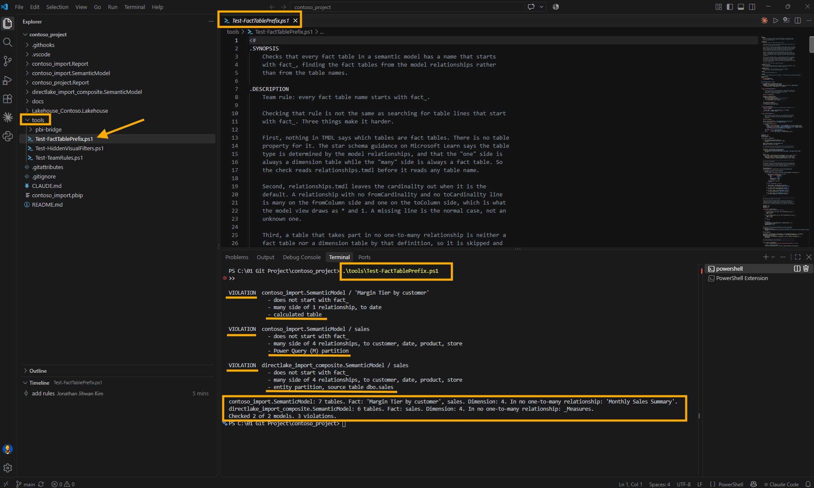
Three violations across two models. The Direct Lake sales is the table from the accident in section 3, and its last line, source table dbo.sales, shows it carrying its source name again. The import model's sales simply still had its plain name. And 'Margin Tier by customer' is the third case, reported as a calculated table. The two summary lines at the bottom show what the check decided for every table, including the ones it skipped, so a wrong decision is visible instead of silent.
8. Where the Rules Live and What Runs Them in VS Code
A second rule raised a question the first one never did: who runs them. It had to be something nobody needs to remember, so I added three things to the repository next to the two rule scripts.
The first is a small runner, tools\Test-TeamRules.ps1. It runs the filter rule against every .Report folder and the prefix rule against every .SemanticModel folder, and it fails if any rule returns 1. A rule that returns 2 is printed as NOT CHECKED and does not fail the run on its own. That is the case for contoso_import.Report, which has one empty page, so the filter rule has no visual to inspect. An empty report is not a broken report, but it is not a pass either, and the runner says so in its last lines.
<#
.SYNOPSIS
Runs every team rule in this folder against the reports and semantic
models in the repository, or only against the ones in the next commit.
.DESCRIPTION
Two rules today:
Test-HiddenVisualFilters.ps1 one .Report folder at a time
Test-FactTablePrefix.ps1 one .SemanticModel folder at a time
Each rule exits 0 when it is clean, 1 when it found violations, and 2 when
it could not inspect anything. This runner fails on any 1. A 2 is printed
as NOT CHECKED and does not fail the run on its own, because a report with
one empty page is not a broken report. It stays visible in the output so
it is never mistaken for a pass.
.PARAMETER Staged
Check only what the next commit contains. This is what the pre-commit hook
passes. A staged .Report folder is checked with the filter rule. A staged
.SemanticModel folder is checked with the prefix rule, and every report
bound to it is checked with the filter rule too, because that rule reads
the field parameters out of the model.
.EXAMPLE
.\tools\Test-TeamRules.ps1
.EXAMPLE
.\tools\Test-TeamRules.ps1 -Staged
#>
[CmdletBinding()]
param(
[switch]$Staged
)
$ErrorActionPreference = 'Stop'
$repoRoot = Split-Path -Parent $PSScriptRoot
$filterRule = Join-Path $PSScriptRoot 'Test-HiddenVisualFilters.ps1'
$prefixRule = Join-Path $PSScriptRoot 'Test-FactTablePrefix.ps1'
$allReports = @(Get-ChildItem -Path $repoRoot -Directory -Filter '*.Report' | Sort-Object Name)
$allModels = @(Get-ChildItem -Path $repoRoot -Directory -Filter '*.SemanticModel' | Sort-Object Name)
function Get-BoundModelName {
<#
The model folder a report is bound to, read from its definition.pbir
the same way the filter rule reads it. Only a byPath reference names a
folder in this repository.
#>
param($Report)
$pbirPath = Join-Path $Report.FullName 'definition.pbir'
if (-not (Test-Path -LiteralPath $pbirPath)) { return $null }
$byPath = (Get-Content -LiteralPath $pbirPath -Raw | ConvertFrom-Json).datasetReference.byPath.path
if (-not $byPath) { return $null }
return (Split-Path -Leaf ($byPath -replace '/', '\'))
}
# ---------------------------------------------------------------------------
# 1. Decide what to check.
# ---------------------------------------------------------------------------
if ($Staged) {
$stagedFiles = @(git -C $repoRoot diff --cached --name-only)
if ($LASTEXITCODE -ne 0) { throw 'git diff --cached --name-only failed.' }
# git prints paths with forward slashes, relative to the repository root,
# and every .Report and .SemanticModel folder sits at the top level.
$stagedFolders = @($stagedFiles | ForEach-Object { ($_ -split '/')[0] } | Sort-Object -Unique)
$models = @($allModels | Where-Object { $stagedFolders -contains $_.Name })
$modelNames = @($models | ForEach-Object { $_.Name })
$reports = @($allReports | Where-Object {
($stagedFolders -contains $_.Name) -or ($modelNames -contains (Get-BoundModelName $_))
})
}
else {
$models = $allModels
$reports = $allReports
}
if ($models.Count -eq 0 -and $reports.Count -eq 0) {
if ($Staged) {
Write-Host 'No .Report or .SemanticModel folder in this commit, so no team rule applies.'
exit 0
}
Write-Warning "No .Report or .SemanticModel folder found under $repoRoot."
exit 2
}
# ---------------------------------------------------------------------------
# 2. Run each rule against each folder.
#
# The output of each rule is held back rather than printed as it arrives.
# When the hook stops a commit, the VS Code dialog shows only the first line
# of what the hook printed, so the verdict has to come first and the details
# after it, behind Show Command Output.
# ---------------------------------------------------------------------------
function Invoke-Rule {
param([string]$Rule, [string]$Target, [hashtable]$Arguments)
$ruleName = Split-Path -Leaf $Rule
$lines = @()
$global:LASTEXITCODE = 0
try {
# *>&1 collects Write-Host and Write-Warning along with everything else.
$lines = @(& $Rule @Arguments *>&1 | ForEach-Object {
if ($_ -is [System.Management.Automation.WarningRecord]) { 'WARNING: ' + $_.Message }
else { "$_" }
})
$code = $LASTEXITCODE
}
catch {
$lines += ('ERROR {0}' -f $_.Exception.Message)
$code = 3
}
$status = switch ($code) {
0 { 'PASS' }
1 { 'FAIL' }
2 { 'NOT CHECKED' }
default { 'ERROR' }
}
return [pscustomobject]@{ Status = $status; Rule = $ruleName; Target = $Target; Lines = $lines }
}
$results = @()
foreach ($m in $models) {
$results += Invoke-Rule -Rule $prefixRule -Target $m.Name -Arguments @{ ModelPath = @($m.FullName) }
}
foreach ($r in $reports) {
$results += Invoke-Rule -Rule $filterRule -Target $r.Name -Arguments @{ ReportPath = $r.FullName }
}
# ---------------------------------------------------------------------------
# 3. Report, verdict first.
# ---------------------------------------------------------------------------
$failing = @($results | Where-Object { $_.Status -eq 'FAIL' -or $_.Status -eq 'ERROR' })
$failingList = @($failing | ForEach-Object { '{0} on {1}' -f $_.Rule, $_.Target }) -join '; '
if ($failing.Count -gt 0 -and $Staged) {
Write-Host ('Team rules stopped this commit: {0}' -f $failingList)
}
elseif ($failing.Count -gt 0) {
Write-Host ('Team rules failed: {0}' -f $failingList)
}
else {
Write-Host ('Team rules passed: {0} checked.' -f @($results | Where-Object { $_.Status -eq 'PASS' }).Count)
}
foreach ($r in $results) {
Write-Host ''
Write-Host ('--- {0} {1}' -f $r.Rule, $r.Target)
foreach ($line in $r.Lines) { Write-Host $line }
}
Write-Host ''
Write-Host 'Team rules:'
foreach ($r in $results) {
Write-Host (' {0,-12} {1,-30} {2}' -f $r.Status, $r.Rule, $r.Target)
}
$notChecked = @($results | Where-Object { $_.Status -eq 'NOT CHECKED' })
if ($notChecked.Count -gt 0) {
Write-Host ''
Write-Host ('{0} NOT CHECKED: the rule inspected nothing there. That does not block, and it is not a pass either.' -f $notChecked.Count)
}
if ($failing.Count -gt 0) {
Write-Host ''
if ($Staged) {
Write-Host 'The commit was stopped. Fix the violations above and commit again.'
}
else {
Write-Host 'Fix the violations above before opening a pull request.'
}
exit 1
}
exit 0The second is the trigger, a Git hook. By default Git looks for hooks in .git\hooks, and nothing in .git is part of the repository, so a hook placed there would only ever exist on my machine. The githooks documentation says the hooks directory can be changed with the core.hooksPath configuration variable, so I put the hook in a tracked folder called .githooks, and each clone points at it once:
git config core.hooksPath .githooksThe hook itself is four lines.
#!/bin/sh
# Runs the team rules against what this commit contains.
# Enable once per clone: git config core.hooksPath .githooks
powershell.exe -NoProfile -ExecutionPolicy Bypass -File tools/Test-TeamRules.ps1 -StagedThat is the whole trigger. When I click Commit in the Source Control view, VS Code runs git commit, and the pre-commit section of the githooks documentation says this hook is invoked before making a commit, and that exiting with a non-zero status causes the commit to abort before creating a commit. The runner exits with 1 when a rule fails, so the commit never happens. The same page says Git runs a hook from the root of the working tree, which is why the relative path to tools works. A .gitattributes line, .githooks/* text eol=lf, keeps the hook's line endings the way sh needs them on Windows.
The -Staged switch keeps the hook fair. It reads git diff --cached --name-only and checks only the .Report and .SemanticModel folders that are in the commit, plus every report bound to a model in the commit, because the filter rule reads field parameters out of the model. A commit that only touches tools passes without running any rule, which is how the rules themselves got committed.
The third is a VS Code task, for running every rule without committing anything. The Tasks article in the VS Code documentation says workspace tasks are configured in tasks.json in the .vscode folder, and that running Run Task from the global Terminal menu shows a picker. Mine is called Check team rules, and because it belongs to the test group, Run Test Task from the Command Palette finds it too.
{
"version": "2.0.0",
"tasks": [
{
"label": "Check team rules",
"type": "process",
"command": "powershell.exe",
"args": [
"-NoProfile",
"-ExecutionPolicy",
"Bypass",
"-File",
"${workspaceFolder}/tools/Test-TeamRules.ps1"
],
"group": "test",
"problemMatcher": []
}
]
}Then I tested the trigger the way it will actually be used. In contoso_import I renamed sales to fact_sales and saved. The Explorer shows the new file, and at the top, .githooks with its pre-commit, with the three scripts under tools further down.
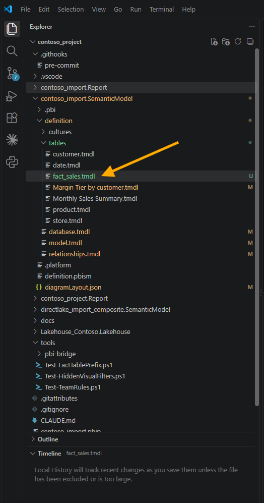
I staged the six changed files and clicked Commit.
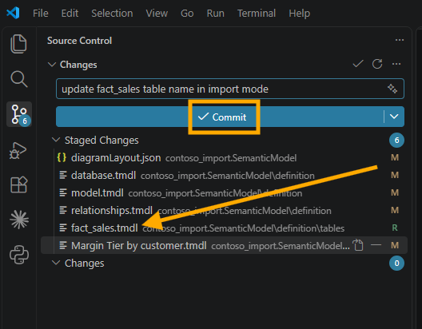
The commit stopped, and the dialog told me almost nothing.
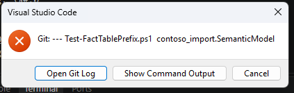
The dialog shows only the first line of what the hook printed, and the first line of my runner was a header. Everything useful sat behind Show Command Output. So I changed the runner to hold back the output of each rule, print the verdict first, and print the details after it. That is the comment at the top of section 2 in the runner above. On the second attempt, the dialog itself said what was wrong.
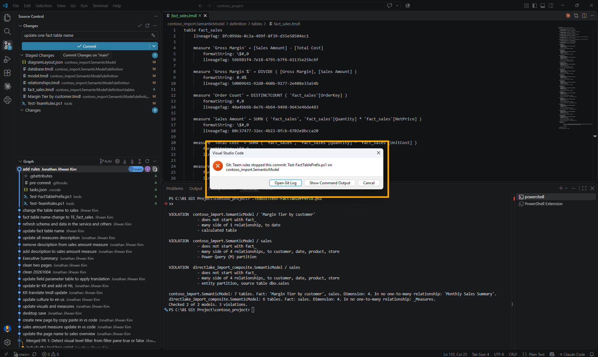
The reason was the third case from section 6. Renaming sales had fixed one violation, but 'Margin Tier by customer' was still a fact table without the prefix, and it had just stopped a real commit. So I renamed it to 'fact_Margin Tier by customer', and while I was there, I renamed the Direct Lake sales back to fact_sales.
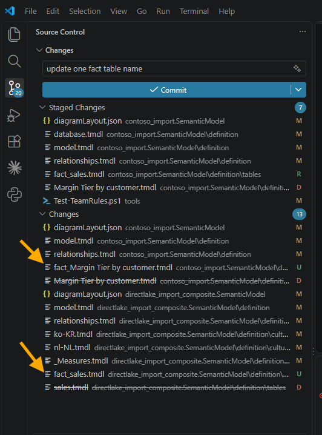
One thing in that screenshot deserves a warning. A rename shows up in Source Control as a deleted file and a new, untracked one. The rules read the files on disk, not the staged copies, so if I had committed the deletion without staging the new file, the check would have passed while the commit lost the table. I staged everything, fourteen changes.
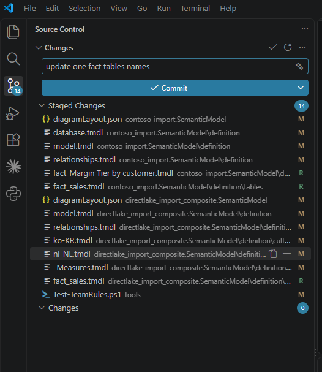
This time the commit went through.
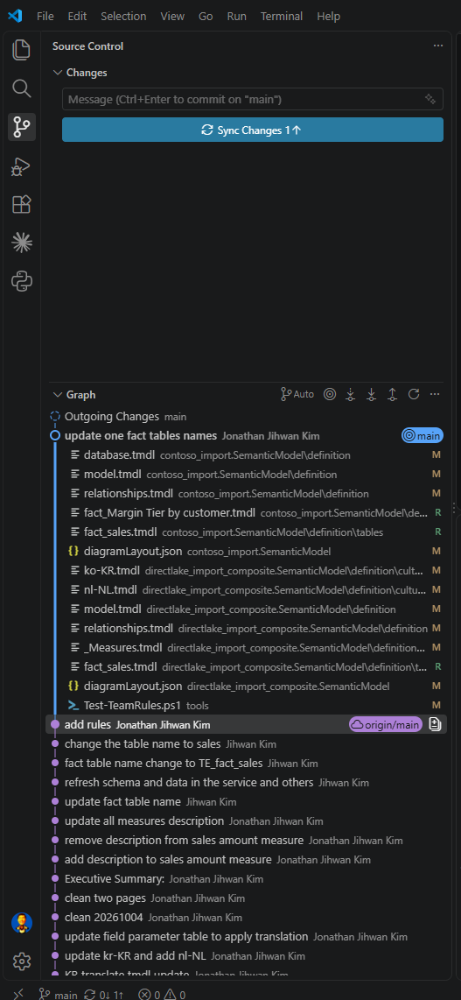
The Direct Lake rename in this commit touched seven files rather than six. Saving the model locally also rewrote diagramLayout.json, which the workspace commit in section 2 had not touched.
9. From a DevOps Standpoint: Catching It Before Anyone Has to Notice
The first rule caught a missing line. This one catches a change that looks harmless in every file it touches.
Code review. A rename is the hardest kind of change to review well. Six or seven files change, every line is a correct substitution, and approving it is the right instinct for nearly every rename. The rule takes the one question that matters, whether the new name still follows the convention, out of the reviewer's head and into a check that answers it the same way every time.
Version control. The rules, the runner, the hook and the task are all files in the same repository as the models they govern, so changing what my team accepts is a commit with a reason attached. The one piece that is not versioned is core.hooksPath, because Git configuration lives in each clone, so every teammate runs that one command once. I put it in the hook's own comment, so the file explains how to switch it on.
Automation. The exit codes from September carried over unchanged: 0 clean, 1 violations, 2 nothing inspected. That contract is what let one runner combine two rules written a month apart, and it is what a build will read later.
Now the limits, and the first one is large. The commits I described in sections 2 and 3, the rename and the accident, were both made from the Fabric workspace, not from VS Code. No hook of mine ran for any of them, because a hook only runs where git commit runs. A change committed in the workspace reaches the branch unchecked, so the hook is a convenience for people who commit from a clone, and the real gate is still the pull request. In September I said I had not run the first rule as a branch policy in Azure DevOps, and I still have not. The githooks documentation is also plain that this hook can be bypassed with the --no-verify option. And my two models have no snowflake dimension, no many-to-many relationship and no role-playing date table, so those paths through the script are ones I read in the documentation rather than ones I have watched it meet.
Closing Thoughts
I expected the second rule to be the easy one, and the prefix check really is one line. Everything around it was about the word fact, which no file in my model writes down. Microsoft's own definition turned out to be the most useful thing I read: a table's type comes from its relationships, so the check can find the fact tables without anybody listing them.
Find the fact tables from the relationships, not from their names.
The cost in numbers: a rule of 322 lines, a runner of 188, a hook of four lines and a task of nineteen. The first run found three violations in two models, one of them a table I would never have called a fact table. The commit that fixed them changed fourteen files, and it went through only because the check agreed.
I hope this helps having fun in putting your team's next sentence through the same four questions, and embracing this new era of Power BI semantic models that review like code!